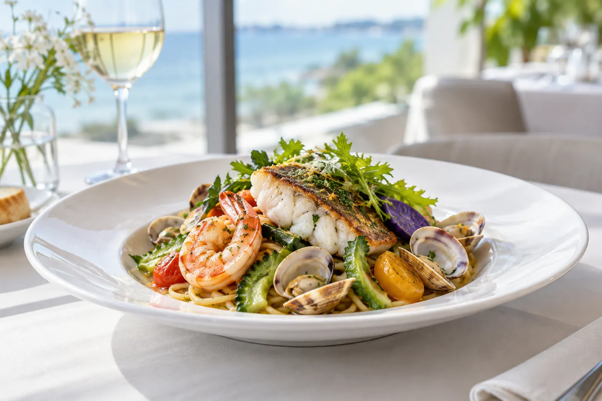
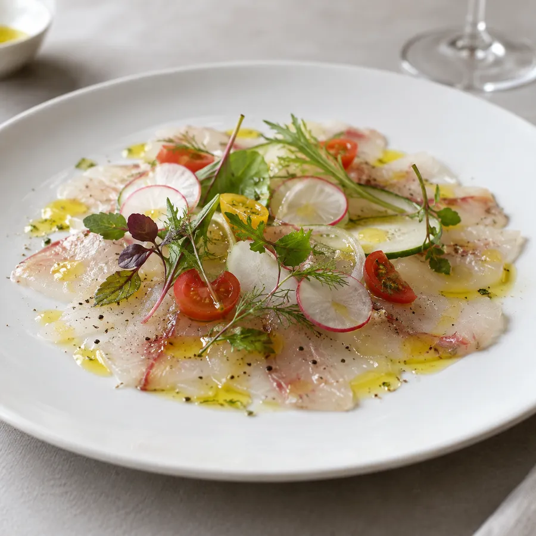
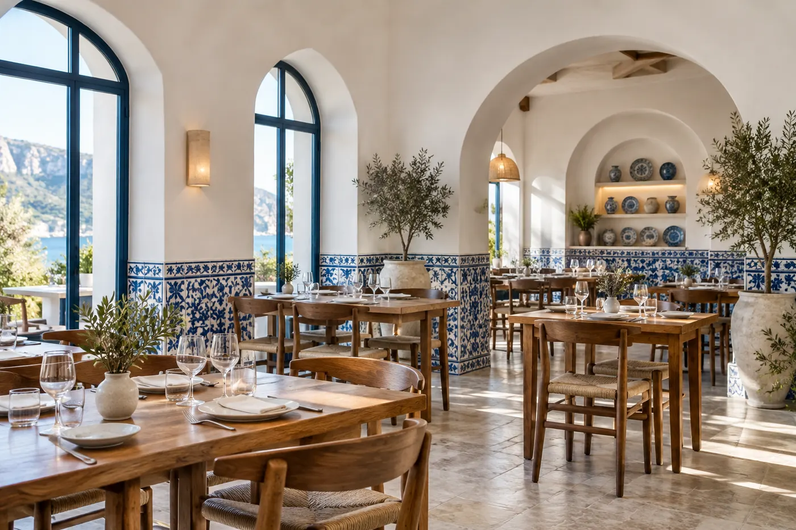
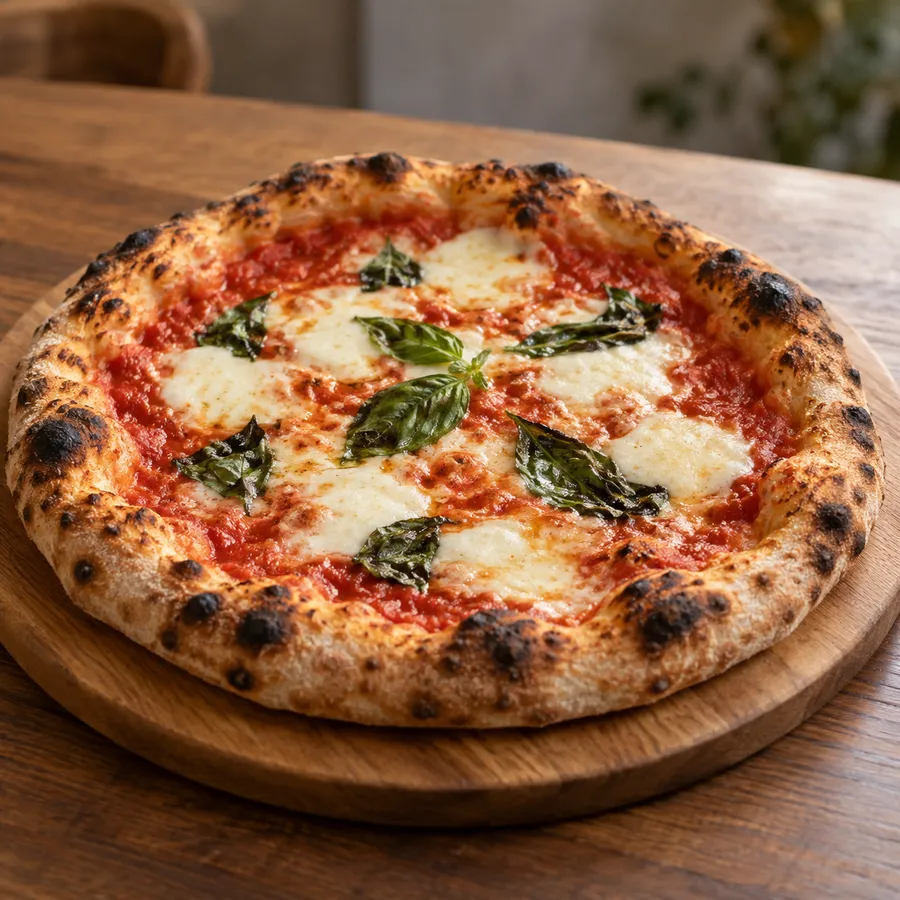

海と畑の恵みを、イタリアの台所で。
ご予約がおすすめ ・ 三浦野菜と魚介のイタリアン
三浦半島の野菜と、相模湾に揚がった魚介。葉山の海辺にある、小さなトラットリアです。
こだわり
三浦大根、キャベツ、季節の葉もの。近くの農家さんから届く野菜と、漁港の魚介で、その日のメニューを決めています。
パスタは毎朝打つ手打ち麺。薪窯で焼くピッツァは、ランチでも人気です。お子さま連れも歓迎しています。
シェフ

お品書き
価格は税込・お一人様。
店内
テーブル28席と、海が見えるテラス8席。貸切パーティーは30名様まで承ります。


ご案内
ご予約
ご予約がおすすめです。お電話・LINE・ネット予約で承ります。